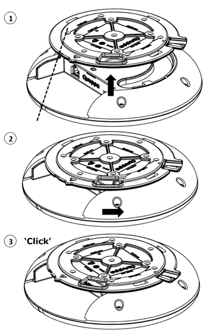

Using the Q17 Locator
This section includes information about installing the Q17 Locator, connecting it to a power supply and a network as well as resetting the device to factory settings.
Quuppa’s recommendation is to align all Locator LEDs in the same direction. For example, install all Locators so that their LEDs face one of the cardinal points.
Installation
The Quuppa Q17 should be mounted clear of any metal obstructions (such air-conditioning ducts, large ceiling trusses, building superstructures) to the side or front of the enclosure. In case needed, use a rigid conduit to lower the Quuppa Q17 away from these obstructions.
- Install mounting bracket to the ceiling
The installation begins with the installation of the mounting bracket. The mounting bracket has several holes for mounting screws. Use at least 4 screws to ensure a stable installation. The recommended pattern is either VESA standard 75mm x 50mm or 50mm x 50mm, which are both indicated on the mounting bracket.
The Ethernet cable can be pulled through the cable passage on the bracket, if there is a need to hide the cabling.The orientation indicator and orientation guideline on the mounting bracket may be used to align the Quuppa Q17 according to a defined orientation in the environment
CAUTION: Never attach, mount, or connect the mounting bracket to hot surfaces. Always make sure that the surface can carry the weight of the equipment before installation.Not following general safety regulation can cause damage to objects or injuries to people. Rely on qualified personnel for carrying out the installation of Quuppa Q17 devices.
- Install the Quuppa Q17 main unit to the mounting bracket

- Attach the Ethernet cable (and Micro USB cable for power if PoE isn't used).
- Use the connector cover to protect the connector area from dust and dirt as needed.
- Align the Quuppa Q17 main unit with the bracket by ensuring that the installation guide in the mounting bracket is aligned with the indicator light on the Quuppa Q17 main unit (1).
- Lift the Quuppa Q17 main unit so that the bracket goes into the bracket mounting channel (1).
- Rotate the Quuppa Q17 main unit (2) until you hear a ‘click’ (3).
Connect to Power Supply
Option 1: Use Power over Ethernet (PoE)
The Quuppa Q17 supports the use of standard IEEE 802.3at Type 1 PoE components, e.g. PoE switch or power injector, as its power source. Only use standard certified PoE devices. When using PoE, a separate DC power supply is not required.
Option 2: Use separate 5V DC Micro USB
If you are not using PoE components, connect the Quuppa Q17 to a 5V power supply with a Micro USB. Only use compatible power supplies. Contact Quuppa in case of any uncertainty regarding compatible power supplies.
When the power supply is connected, the Quuppa Q17 automatically switches on. The red indicator light blinks multiple times, after which the red indicator light remains constantly on until the Quuppa Q17 is connected to the Quuppa Positioning Engine.
Connect to Network
Connect the Quuppa Q17 to a network with an Ethernet cable using the RJ-45 Ethernet socket. You can use shielded or unshielded Ethernet cables for Quuppa Q17 devices. For your safety and to prevent any damage to the Quuppa Q17, only connect the Quuppa Q17 to standard certified network components.
The red indicator light blinks slowly when the Quuppa Q17 is properly connected to the network but not activated by the Quuppa Positioning Engine software. The blue indicator light blinks or is constantly lit when the Quuppa Q17 is activated by the Quuppa Positioning Engine software.
Reset to Factory Settings
To reset a Locator to factory settings, use a small pin to press and hold the reset button while the Locator is connected to a power supply. Continue to hold the reset button as the indicator light turns green and only release it once it has turned red. When you release the reset button, the Locators will reboot, as indicated by the indicator light's reboot sequence of blinking red, green and blue once.